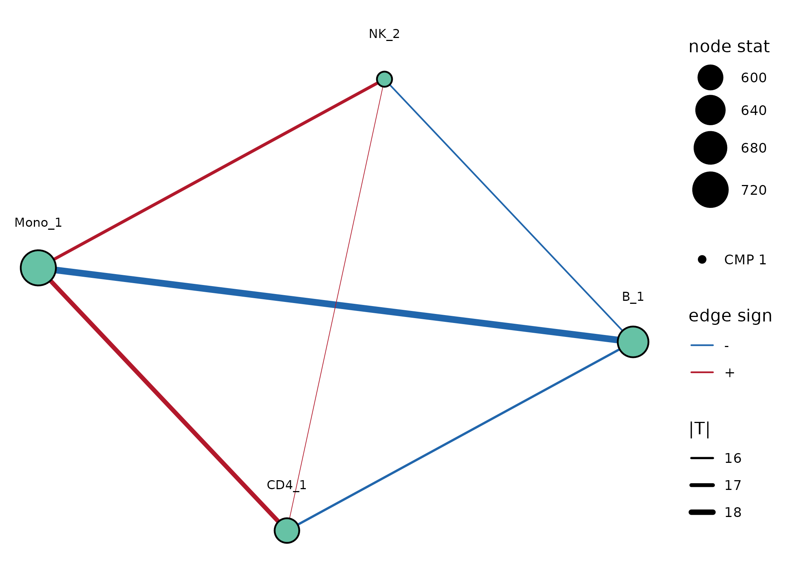
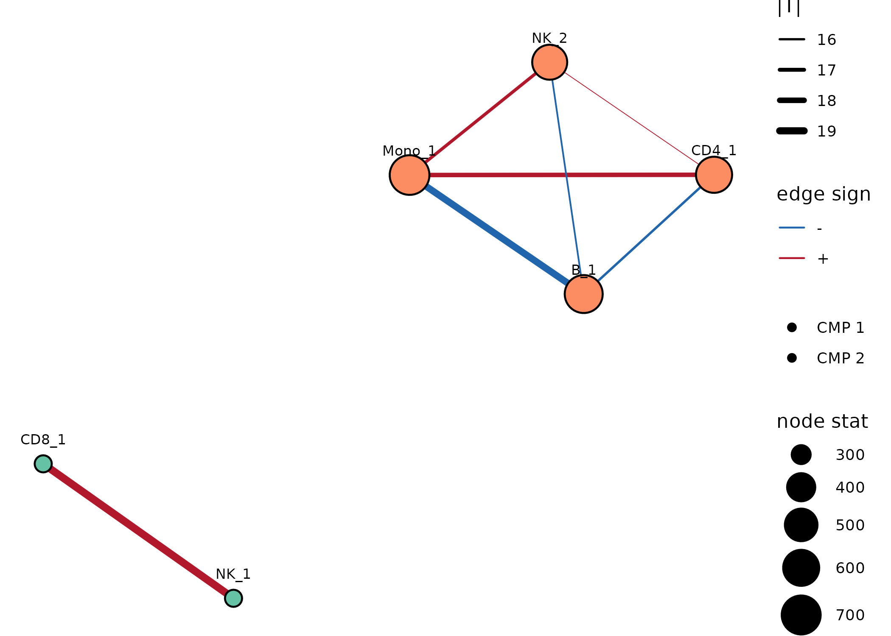
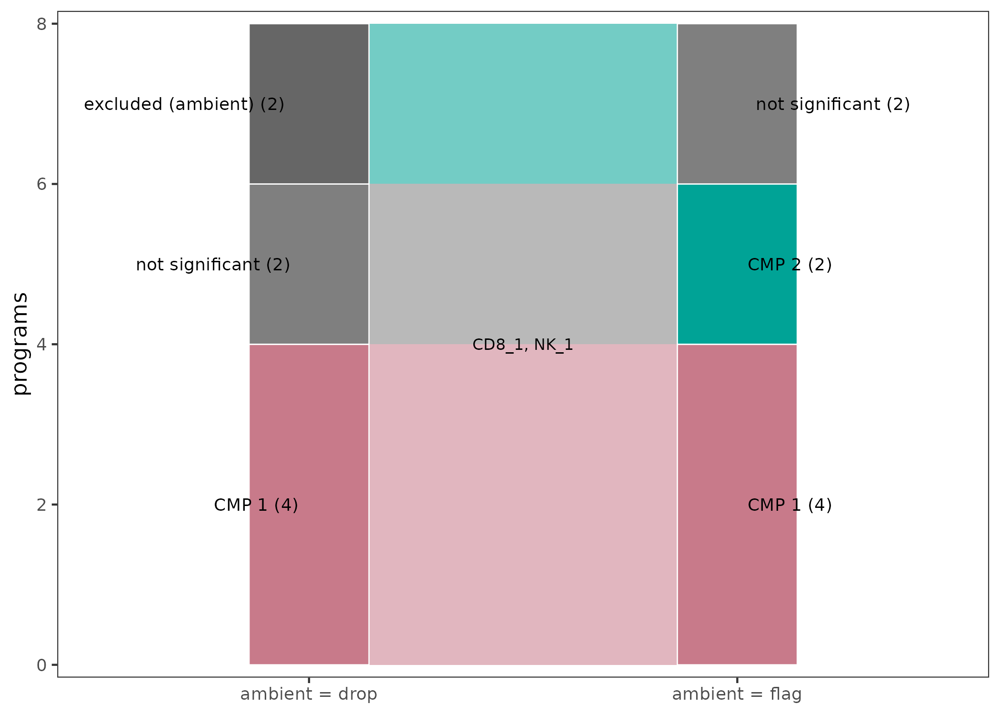
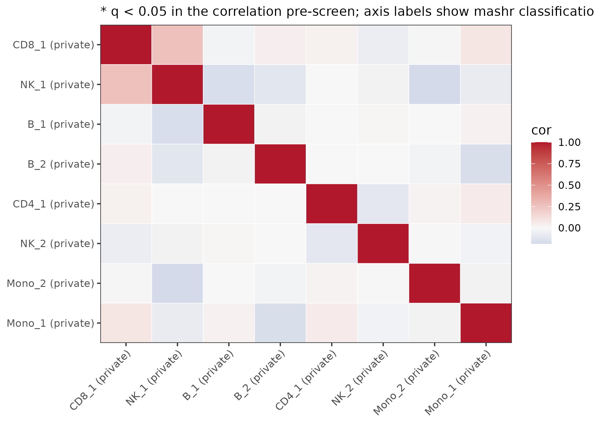
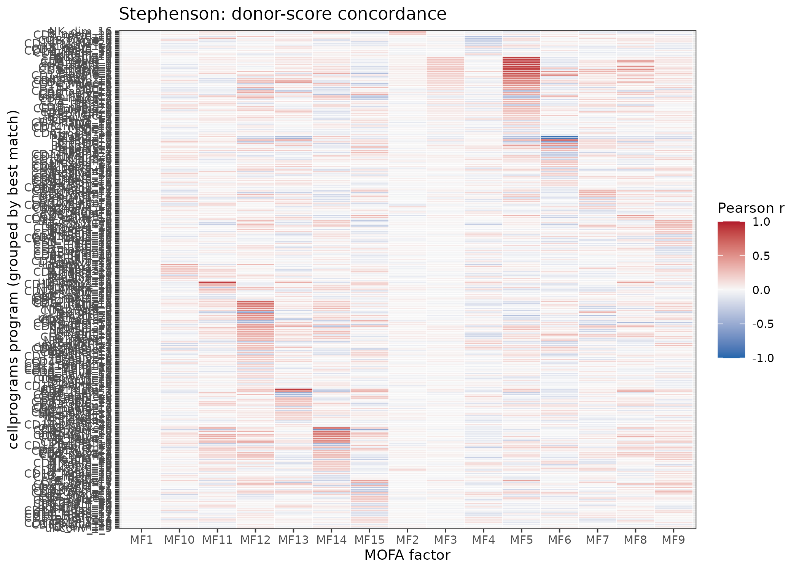
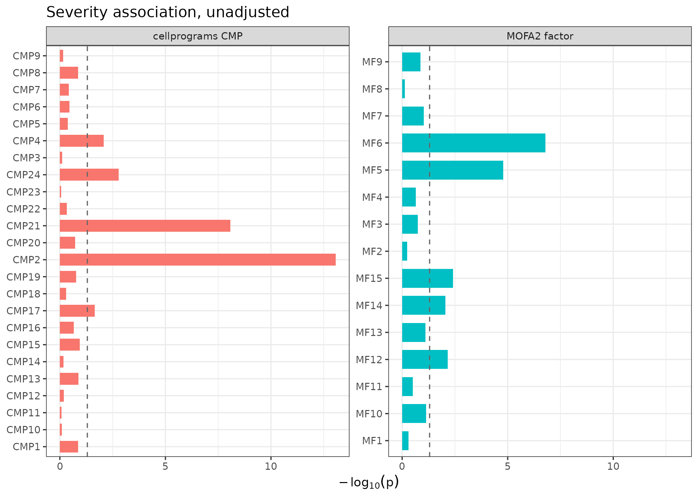
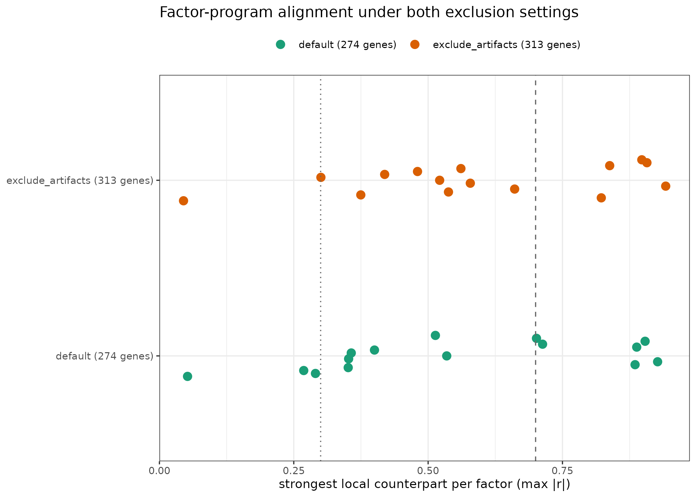

Compared to MOFAcellulaR: local-first vs joint multicellular factor analysis
mofacellular_comparison.RmdMOFAcellulaR fits a joint multicellular factor analysis: the pseudobulk profiles of all cell types are stacked as MOFA2 views (one per cell type), and MOFA estimates a single latent space shared across views. Each factor is by construction a multicellular program — a linear combination of gene weights from every cell type.
cellprograms takes the local-first
route: one empirical-Bayes matrix factorization per cell type, with
cross-cell-type coordination (CMPs) and sharing (mashr) as separate,
explicitly tested post-hoc questions.
This vignette runs both on the same simulated data with known ground truth, aligns their outputs, and states where each is expected to win. It complements the MOFAcellulaR get-started tutorial and the liana notebook on metadata associations — the same questions, asked of both models.
library(cellprograms)
if (!requireNamespace("MOFA2", quietly = TRUE) ||
!requireNamespace("MOFAcellulaR", quietly = TRUE)) {
message("MOFA2/MOFAcellulaR not installed; skipping the comparison sections.")
}
#> MOFA2/MOFAcellulaR not installed; skipping the comparison sections.The data: planted multicellular programs
simulate_pseudobulk(scenario = "mixed") plants three
kinds of structure whose donor scores and gene sets are known
exactly:
-
global_IFN— coordinated donor activity across B, CD4, NK and Mono (the same donor score vector planted in each cell type) with different genes in each cell type. A pure activity-coordination program: gene overlap carries no signal. -
CD8NK_shared— coordinated activity and identical genes across CD8 and NK. -
Private programs (
B_private,Mono_private) — single-cell-type decoys that should not be called multicellular.
sim <- simulate_pseudobulk(scenario = "mixed", n_samples = 60,
n_genes = 800, program_size = 40, seed = 1)
x <- as_cell_program_data(sim$pseudobulk)
## a donor context variable for the association analyses: high vs low
## donor score of the planted global_IFN program (as "severity" would be
## in a real cohort)
z_ifn <- sim$truth$B[[which(vapply(sim$truth$B, function(t) t$label == "global_IFN", TRUE))]]$z
md <- data.frame(observation_id = paste0("obs", seq_along(z_ifn)),
ifn_high = factor(z_ifn > median(z_ifn), c(FALSE, TRUE), c("low", "high")))
x <- as_cell_program_data(sim$pseudobulk, sample_metadata = md)cellprograms: local fits, then explicit coordination tests
fit <- fit_celltype_programs(x, loading_prior = "point_laplace",
max_factors = 6, features = "variable",
n_variable_genes = 400, seed = 1)
fit <- canonicalize_programs(fit)
program_summary(fit)
#> cell_type n_obs n_genes n_programs R2 elbo
#> 1 B 60 400 2 0.2439779 -36065.09
#> 2 CD4 60 400 1 0.1707640 -35709.99
#> 3 CD8 60 400 1 0.2010540 -35859.83
#> 4 NK 60 400 2 0.2948849 -36081.50
#> 5 Mono 60 400 2 0.2997384 -35859.12Coordination (score space, permutation FWER) and sharing (loading space, mashr):
cmp <- find_coordinated_programs(fit, n_perm = 999, seed = 1, min_donors = 20)
cmp
#> <cmp_result> 1 coordinated multicellular program(s) at FWER 0.05 (mode: marginal, ambient: drop)
#> CMP 1: B_1, CD4_1 (-), NK_2 (-), Mono_1 (-)
plot_cmp_network(cmp)
Only one CMP is called — why not the planted CD8–NK pair? Both local
fits did recover it (CD8_1 and NK_1 correlate r > 0.99 with
the planted donor scores), but the default ambient guard
(ambient = "drop", threshold 0.3) removed both members
before testing: their loadings look like they track genes more highly
expressed in B cells (ambient scores 0.45 and 0.39). On simulated data
there is no ambient RNA by construction, so these are false positives of
the guard. Re-running with ambient = "flag" (flag, don’t
drop) recovers both planted CMPs exactly — and the CD8–NK edge turns out
to be the strongest edge in the entire analysis:
amb <- ambient_program_scores(fit)
amb[order(-amb$ambient_score), ][1:4, ]
#> cell_type program_id ambient_score source
#> 4 CD8 CD8_1 0.4464663 B
#> 5 NK NK_1 0.3852758 B
#> 8 Mono Mono_2 0.2471914 B
#> 7 Mono Mono_1 0.2398713 CD8
cmp_flag <- find_coordinated_programs(fit, n_perm = 999, seed = 1,
min_donors = 20, ambient = "flag")
cmp_flag
#> <cmp_result> 2 coordinated multicellular program(s) at FWER 0.05 (mode: marginal, ambient: flag)
#> CMP 1: CD8_1, NK_1
#> CMP 2: B_1, CD4_1 (-), NK_2 (-), Mono_1 (-)
plot_cmp_network(cmp_flag)
plot_cmp_membership(list("ambient = drop" = cmp, "ambient = flag" = cmp_flag),
label_programs = TRUE)
The practical lesson: when the contamination status of a dataset is
unknown, ambient = "flag" is the safer choice — the guard
stays visible (ambient_flag in the membership table)
instead of silently removing programs. This episode is itself part of
the comparison: explicit guards can misfire, but they are inspectable
and configurable in a way a joint model’s implicit assumptions are
not.
shr <- program_sharing(fit, n_perm = 999, seed = 1)
plot_sharing(shr)
MOFAcellulaR: one joint latent space
as_mofacellular_input() exports the same pseudobulk as
the (counts, coldata) pair
MOFAcellulaR::create_init_exp() expects, guaranteeing both
models see identical inputs. MOFAcellulaR’s QC chain
(filt_profiles, tmm_trns, …) targets
raw-count pseudobulk; the simulated profiles are already
continuous, so we hand the views to MOFA2 directly (with real data, run
their full preprocessing first):
mofa_in <- as_mofacellular_input(x) # counts + coldata (the interop adapter)
views <- lapply(sim$pseudobulk, t) # genes x donors, one view per cell type
mo <- MOFA2::create_mofa(views)
mo_opts <- MOFA2::get_default_model_options(mo)
mo_opts$num_factors <- 8
mo_opts$spikeslab_weights <- FALSE # as in the MOFAcellulaR tutorial
tr_opts <- MOFA2::get_default_training_options(mo)
tr_opts$seed <- 1
mo <- MOFA2::prepare_mofa(mo, model_options = mo_opts, training_options = tr_opts)
mofa_model <- MOFA2::run_mofa(mo, outfile = tempfile(fileext = ".hdf5"), save_data = FALSE)
Z_mofa <- MOFA2::get_factors(mofa_model)$group1 # donors x factors
dim(Z_mofa)Aligning the two models
Both models return donor-level scores — cellprograms per cell type
(fit$scores), MOFA shared across views. The natural
alignment is a donor-score correlation between every cellprograms
program and every MOFA factor:
progs <- do.call(cbind, fit$scores)
r_mat <- cor(progs, Z_mofa)
df <- data.frame(program = rep(rownames(r_mat), ncol(r_mat)),
factor = rep(colnames(r_mat), each = nrow(r_mat)),
r = as.vector(r_mat))
ggplot2::ggplot(df, ggplot2::aes(factor, program, fill = r)) +
ggplot2::geom_tile(color = "white") +
ggplot2::scale_fill_gradient2(low = "#2166AC", mid = "#F7F7F7", high = "#B2182B",
midpoint = 0, limits = c(-1, 1), name = "Pearson r") +
ggplot2::labs(x = "MOFA factor", y = "cellprograms program",
title = "Donor-score concordance between the two models") +
ggplot2::theme_bw()Reading it: programs that appear in both models light up a MOFA factor; MOFA factors with no cellprograms counterpart are typically cell-type-specific or artifact directions that the local fits + CMP test separated out.
Ground-truth recovery
For each planted program and each cell type it was planted in: the best |correlation| between the planted donor scores and any recovered program (factor) of that cell type, plus gene-set recovery (Jaccard of the top-40 |loadings| against the planted genes):
## planted programs as (cell type, label, donor scores, planted gene names)
planted <- unlist(lapply(names(sim$truth), function(ct) {
lapply(seq_along(sim$truth[[ct]]), function(k) {
list(ct = ct, t = sim$truth[[ct]][[k]],
genes = colnames(sim$pseudobulk[[ct]])[sim$truth[[ct]][[k]]$gene_idx])
})
}), recursive = FALSE)
## per planted program: best |cor| of donor scores against any recovered
## program/factor of that cell type, and Jaccard of the top-40 |loading|
## genes against the planted genes
recover <- function(scores, loadings) {
do.call(rbind, lapply(planted, function(p) {
S <- scores[[p$ct]]; W <- loadings[[p$ct]]
if (is.null(S) || ncol(S) == 0) return(NULL)
r_best <- suppressWarnings(max(abs(cor(S, p$t$z)), na.rm = TRUE))
top <- apply(abs(W), 2, function(w) rownames(W)[order(-abs(w))][seq_len(40)])
j <- apply(as.matrix(top), 2, function(g) length(intersect(g, p$genes)) / 40)
data.frame(label = p$t$label, cell_type = p$ct, best_r = r_best, gene_jaccard = max(j))
}))
}
rec_cp <- recover(fit$scores, fit$loadings)
## MOFA2 suffixes feature names with the view name when views share genes
## (G1 -> G1_B); strip it before matching planted gene names
w_mofa <- lapply(names(sim$pseudobulk), function(ct) {
W <- as.matrix(MOFA2::get_weights(mofa_model, views = ct)[[1]])
rownames(W) <- sub(paste0("_", ct, "$"), "", rownames(W))
W
})
names(w_mofa) <- names(sim$pseudobulk)
rec_mf <- recover(setNames(rep(list(Z_mofa), length(sim$pseudobulk)), names(sim$pseudobulk)),
w_mofa)
knitr::kable(rbind(cbind(model = "cellprograms", rec_cp),
cbind(model = "MOFA2", rec_mf)),
digits = 2, caption = "Best donor-score |r| and top-gene Jaccard per planted program")What to expect: the two models tie on raw recovery — every planted program’s donor activity comes back at best |r| ≥ 0.9 in both, with comparable partial gene-set recovery (top-40 Jaccard 0.7–0.85; the local fits use the 400 most variable genes, so a few planted genes are not in play). The differences this comparison is designed to expose are in the statements each model can make about that recovery — calibrated uncertainty, membership decisions, artifact handling — in the sections below.
Coordination: explicit test vs by construction
- In MOFA2, every factor is multicellular by construction; deciding
whether a factor genuinely coordinates cell types (vs being
driven by one view) is left to downstream inspection (variance
decomposition per view,
plot_MOFA_hmap). -
find_coordinated_programs()tests each candidate against a within-strata permutation null with max-T family-wise error control, and reports which programs are members.
On this data, with the ambient guard set to flag rather than drop, cellprograms recovers both planted multicellular programs exactly — membership, sign, and a calibrated per-program p-value (all node p = 0.001) — and correctly leaves both private decoys uncalled (node p = 1). MOFA2 recovers the planted donor activity in its factors but offers no calibrated answer to “is this factor genuinely multicellular?”: every factor is multicellular by construction, so the private decoys also come back as factors with weights in every view.
The default run above illustrates the flip side of the local-first
philosophy’s explicit guards: the ambient filter, doing its job on a
signal it cannot verify, silently removed a true shared program. The
guard is inspectable (ambient_program_scores()) and
configurable (ambient = "flag"), which is why flagging is
the recommended setting when contamination status is unknown. MOFA2 has
no analogous guard — and no analogous false positive; its risks sit
elsewhere (view-dominant factors, no FWER control on “is this
shared?”).
Metadata associations
The MOFAcellulaR tutorial associates factor scores with sample
metadata (get_associations: ANOVA for categorical, linear
for continuous). The cellprograms counterpart is
cmp_context_association() on CMP consensus scores:
## cellprograms: CMP scores vs the planted context
ca <- cmp_context_association(fit, cmp, "ifn_high")
ca[order(ca$p), ]
## MOFAcellulaR: factor scores vs the same context
md_f <- data.frame(sample = rownames(Z_mofa), ifn_high = md$ifn_high[match(rownames(Z_mofa), md$observation_id)])
ga <- MOFAcellulaR::get_associations(model = mofa_model, metadata = md_f,
sample_id_column = "sample",
test_variable = "ifn_high",
test_type = "categorical", group = FALSE)
ga[order(ga$p.value), ]Both should flag the factors/programs aligned with the planted
global_IFN donor scores (the sign of the estimate is
arbitrary — program and factor directions are identified only up to
sign). The cellprograms result is restricted to permutation-validated
CMPs; the MOFA result covers all factors including view-specific
ones.
Real data: Stephenson COVID-19 PBMCs
The simulation fixes the ground truth; the real-data case study shows the masked-fit workflow on the Stephenson COVID-19 cohort. Here we run both models on that same pseudobulk (119 donors, 12 cell types) and ask the same two questions: do the models agree on donor-level structure, and do they agree on the severity association?
The cellprograms side is the masked fit from the case study
(max_factors = 30, 2,000 variable genes per cell type,
V(D)J and genotype-marker genes excluded before feature selection,
institute and sex residualized). MOFAcellulaR gets the identical
pseudobulk through its own QC chain — profile filtering, edgeR
expression filter, sample coverage filter, TMM normalization — with two
parity constraints: its per-view gene panels are restricted to the
same 2,000-gene panels the local fits used
(prior_hvg), and the same 274-gene blacklist is
vetoed from every view via filt_gex_bybckgrnd(). We train
15 factors (spikeslab_weights = FALSE, seed 1, as in their
tutorial):
## heavy: ~15 min; cached results used below
counts <- do.call(cbind, lapply(cts, function(ct) t(fit$pseudobulk[[ct]][, shared, drop = FALSE])))
ct_list <- MOFAcellulaR::create_init_exp(counts = counts, coldata = coldata) %>%
MOFAcellulaR::filt_profiles(pb_dat = ., cts = cts, ncells = 0,
counts_col = "cell_counts", ct_col = "cell_type") %>%
MOFAcellulaR::filt_views_bysamples(pb_dat_list = ., nsamples = 2) %>%
MOFAcellulaR::filt_gex_byexpr(pb_dat_list = ., min.count = 5, min.prop = 0.25) %>%
MOFAcellulaR::filt_views_bygenes(pb_dat_list = ., ngenes = 15) %>%
MOFAcellulaR::filt_samples_bycov(pb_dat_list = ., prop_coverage = 0.9) %>%
MOFAcellulaR::tmm_trns(pb_dat_list = ., scale_factor = 1e6) %>%
MOFAcellulaR::filt_gex_byhvg(pb_dat_list = ., prior_hvg = fit$preprocessing$feature_sets,
var.threshold = 0) %>%
MOFAcellulaR::filt_gex_bybckgrnd(pb_dat_list = .,
prior_mrks = list(phantom = fit$preprocessing$exclude_genes)) %>%
MOFAcellulaR::filt_views_bygenes(pb_dat_list = ., ngenes = 15) %>%
MOFAcellulaR::pb_dat2MOFA(pb_dat_list = ., sample_column = "observation_id") %>%
MOFA2::create_mofa()
## ... then prepare_mofa(num_factors = 15, spikeslab_weights = FALSE, seed = 1) and run_mofa()
cache_path <- "mofacellular_stephenson_cache.rds"
if (!file.exists(cache_path)) {
cache_path <- file.path("vignettes", "articles", "mofacellular_stephenson_cache.rds")
}
has_cache <- file.exists(cache_path)
if (!has_cache) {
message("Cached Stephenson MOFA run not found; the real-data results below ",
"are skipped. Re-run the previous chunk to regenerate them.")
} else {
cache <- readRDS(cache_path)
}The QC chain retains 118 of 119 donors (their 0.9-coverage filter
drops one) and, after MOFAcellulaR’s expression filter, 259–880 genes
per view of our 2,000-gene panels — their filt_gex_byexpr
is stricter on this count data than our variability screen.
MOFAcellulaR’s own QC flags factors 4 and 8 as correlated with per-donor
feature counts (complexity artifacts); we keep them, as their tutorial
does, and read the alignment accordingly.
Donor-score alignment
r <- cache$r_mat
best_f <- max.col(abs(r))
ord <- order(best_f, -abs(r[cbind(seq_len(nrow(r)), best_f)]))
df <- data.frame(program = factor(rownames(r)[ord], levels = rev(rownames(r)[ord])),
factor = rep(colnames(r), each = nrow(r)),
r = as.vector(r[ord, ]))
#> Warning in data.frame(program = factor(rownames(r)[ord], levels =
#> rev(rownames(r)[ord])), : row names were found from a short variable and have
#> been discarded
ggplot2::ggplot(df, ggplot2::aes(factor, program, fill = r)) +
ggplot2::geom_tile(color = "white", linewidth = 0.1) +
ggplot2::scale_fill_gradient2(low = "#2166AC", mid = "#F7F7F7", high = "#B2182B",
midpoint = 0, limits = c(-1, 1), name = "Pearson r") +
ggplot2::labs(x = "MOFA factor", y = "cellprograms program (grouped by best match)",
title = "Stephenson: donor-score concordance") +
ggplot2::theme_bw(base_size = 9)
The picture: most MOFA factors are essentially one local program each — MF13 ↔︎ CD4_mem_1 (r = 0.90), MF6 ↔︎ Plasma_1 (r = −0.93), MF5 ↔︎ NK_dim_2 and MF11 ↔︎ unconv_T_3 (r = 0.89) — while MF1 has no local counterpart (max |r| = 0.05) and the two QC-flagged complexity factors align only moderately (|r| ≤ 0.53). Total variance explained per view ranges from 21% (B_mem) to 63% (NK_dim). This is the expected division of labor: the joint model spends factors on the strongest shared axes, the local fits keep per-cell-type structure that a 15-factor joint model cannot afford a factor for.
Severity associations, same test both sides
ca <- cache$cmp_assoc # unadjusted, to match get_associations (no covariates)
ga <- cache$mofa_assoc
df <- rbind(data.frame(model = "cellprograms CMP", label = paste0("CMP", ca$cmp),
p = ca$p),
data.frame(model = "MOFA2 factor", label = sub("Factor", "MF", ga$Factor),
p = ga$p.value))
ggplot2::ggplot(df, ggplot2::aes(-log10(p), label, fill = model)) +
ggplot2::geom_col(width = 0.7) +
ggplot2::geom_vline(xintercept = -log10(0.05), linetype = 2, color = "grey40") +
ggplot2::facet_wrap(~model, scales = "free_y") +
ggplot2::labs(x = expression(-log[10](p)), y = NULL,
title = "Severity association, unadjusted") +
ggplot2::theme_bw(base_size = 9) + ggplot2::theme(legend.position = "none")
Both models flag severity axes: the strongest CMP (CMP2, estimate
0.30) at p = 9e-14, with CMP21 at 8e-9; MOFA’s Factor6 at p = 1.7e-7 and
Factor5 at 1.6e-5. The comparison vignette uses unadjusted tests on both
sides for parity — get_associations() fits
value ~ severity with no covariate support — while the case study adjusts for institute
and sex, which is the recommended workflow. Do not over-read the p-value
gap: CMP consensus scores pool several member programs (denoising),
whereas each MOFA factor is a single axis.
Artifact-exclusion sensitivity
Both sides were rerun with the full artifact preset: the cellprograms
refit uses
fit_celltype_programs(..., exclude_artifacts = TRUE)
(exclusion grows from the 274 vdj + genotype-marker genes to 313, adding
39 canonical identity markers, TCR constant genes, and sex-linked genes;
everything else identical — point-Laplace, K = 30, 2,000 HVGs, institute
+ sex residualized, seed 1), and MOFAcellulaR gets the same 313-gene
list vetoed across views plus the refit’s HVG panels.
excl_path <- "mofacellular_stephenson_cache_excl.rds"
if (!file.exists(excl_path)) {
excl_path <- file.path("vignettes", "articles", "mofacellular_stephenson_cache_excl.rds")
}
has_cache_excl <- file.exists(excl_path)
if (!has_cache_excl) {
message("mofacellular_stephenson_cache_excl.rds not found; ",
"skipping the sensitivity results (see benchmarks/mofacellular_comparison/ to build it).")
}
c1 <- readRDS(excl_path)
c0 <- if (exists("cache", inherit = TRUE)) cache else readRDS(cache_path)
df <- rbind(data.frame(setting = "default (274 genes)",
max_r = apply(abs(c0$r_mat), 2, max)),
data.frame(setting = "exclude_artifacts (313 genes)",
max_r = apply(abs(c1$r_mat), 2, max)))
df$setting <- factor(df$setting, levels = c("default (274 genes)",
"exclude_artifacts (313 genes)"))
ggplot2::ggplot(df, ggplot2::aes(max_r, setting, color = setting)) +
ggplot2::geom_point(size = 2.6, position = ggplot2::position_dodge2(width = 0.25)) +
ggplot2::geom_vline(xintercept = c(0.3, 0.7), linetype = c(3, 2), color = "grey40") +
ggplot2::scale_color_manual(values = c("#1B9E77", "#D95F02"), name = NULL) +
ggplot2::labs(x = "strongest local counterpart per factor (max |r|)", y = NULL,
title = "Factor-program alignment under both exclusion settings") +
ggplot2::theme_bw(base_size = 9) + ggplot2::theme(legend.position = "top")
Factor labels are not comparable across refits (each model has its own axes), so the plot shows the 15 per-factor maxima as distributions per setting.
The headline conclusions are insensitive to the preset. The strongest alignments barely move (Plasma_1 at |r| = 0.94, CD4_mem_1 at 0.91, CD4_mem_20 at 0.90 under the expanded exclusion, vs 0.93/0.90/0.89 default); program count drops 284 → 278, CMPs 24 → 25 with 598 → 516 edges; MOFA view sizes shrink modestly (250–874 genes vs 259–880) and total per-view R² spans 18–60% vs 21–63%. Two differences are worth noting. First, the number of MOFA factors with no local counterpart falls from three to one — the survivor (MF1, max |r| = 0.04) is present under both settings and unexplained by either model. Second, the severity signal sharpens: the strongest CMP moves from estimate 0.296, p = 9e-14 to estimate 0.313, p = 1e-16, while MOFA’s leading factor is essentially unchanged (Factor6, p = 1.7e-7 → 4.1e-7). Removing identity-marker and sex-linked genes from the panels makes the coordinated disease program cleaner rather than diluting it — the preset is a guard against artifact-driven programs, not a results-changer. MOFAcellulaR’s complexity-artifact QC flag moves from factors 4/8 to 5/7, i.e. such factors reappear under either panel; they are a normalization/coverage property of the data, not of the blacklist.
When to use which
| Question | cellprograms | MOFAcellulaR |
|---|---|---|
| Programs within one cell type | per-cell-type EBMF, sparse point-Laplace loadings | factor weights per view (shared latent space) |
| Cross-cell-type coordination | CMP test: permutation null, max-T FWER, per-program p | by construction; inspect per-view variance |
| Shared gene effects | mashr layer (lfsr, shared/partial/private) | factor weights are implicitly shared |
| Artifact handling | V(D)J/genotype masking + flagging | manual gene veto (filt_gex_bybckgrnd) |
| Variance decomposition | per-program PVE per cell type | per-factor, per-view R2 (built in) |
| Uncertainty | loading/score posterior SDs, lfsr | none (point estimates) |
| Fit philosophy | local-first; integrate only what replicates | joint from the start |
The two are complementary: as_mofacellular_input()
exists precisely so the same pseudobulk can be pushed through both, with
principal_angles()/align_programs()
quantifying program-to-factor geometry when both are fit.